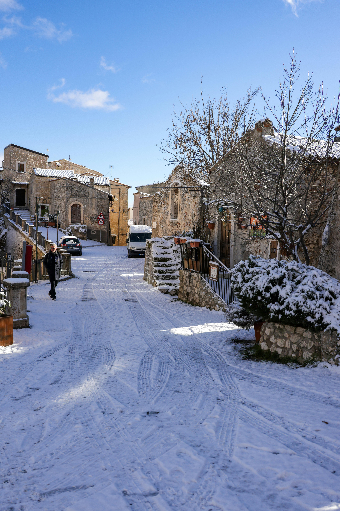

Conheça todas as estações existentes
As estações do ano são períodos em que o clima, a temperatura e a paisagem mudam de forma característica. Elas ocorrem devido à inclinação do eixo da Terra em relação ao Sol.

Verão
O verão é a estação mais quente do ano, caracterizada por dias longos e noites curtas.

Outono
O outono é a estação em que as folhas das árvores caem, caracterizada por dias mais curtos e noites mais longas.

Inverno
O inverno é a estação mais fria do ano, caracterizada por dias curtos e noites longas.

Primavera
A primavera é a estação em que as flores desabrocham, caracterizada por dias mais longos e noites mais curtas.